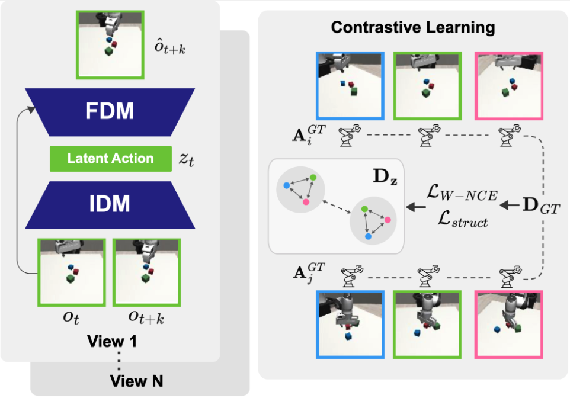
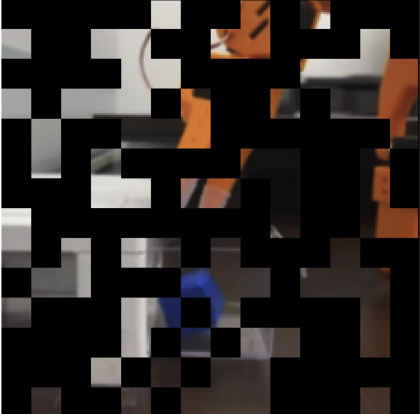
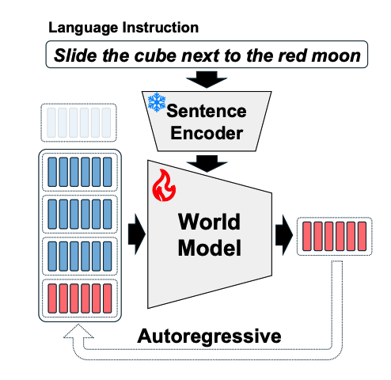
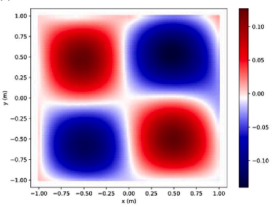
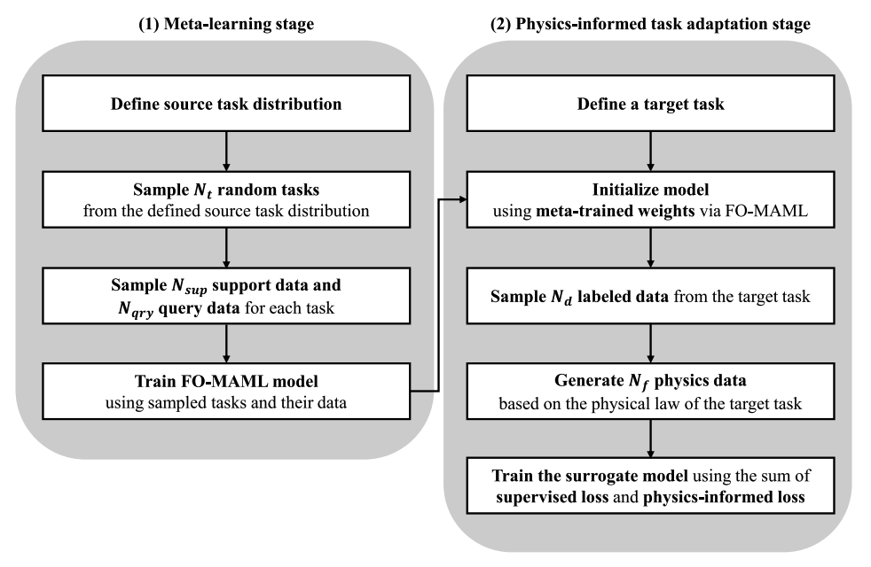
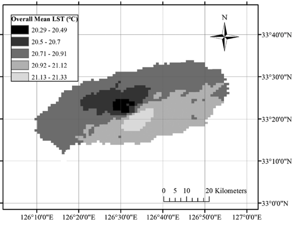

|
Youngjoon Jeong
I am a Ph.D. student in the Graduate School of Data Science at Seoul National University, advised by Taesup Kim.
I received my B.S. and M.S. in Rural Systems Engineering (Agricultural Engineering) from Seoul National University.
I am broadly interested in physical AI and world models.
Email /
CV /
Scholar /
Github /
LinkedIn
|
|
Research Interests
My goal is to build physical AI that operates reliably in the physical world. I study representations for physical AI and world models, from object-centric representations and pretrained ViT features (e.g., DINO) to dynamic representations (latent actions). Recently, I am interested in generative models and 3D foundation models for physical perception and control.
|
Publications
|

|
Learning to Act Robustly with View-Invariant Latent Actions
Y. Jeong*, J. Chun*, T. Kim
The IEEE/CVF Conference on Computer Vision and Pattern Recognition, 2026 (* Equal Contribution)
project page /
arXiv
|
|

|
Sparse Imagination for Efficient Visual World Model Planning
J. Chun*, Y. Jeong*, T. Kim
International Conference on Learning Representations, 2026 (* Equal Contribution)
project page /
OpenReview /
arXiv
|
|

|
Object-centric world model for language-guided manipulation
Y. Jeong*, J. Chun*, S. Cha, T. Kim
ICLR World Model Workshop, 2025 (* Equal Contribution)
arXiv
|
|

|
Piecewise physics-informed neural networks for surrogate modelling of non-smooth system in elasticity problems using domain decomposition
Y. Jeong*, S. Lee*, J. H. Lee, W. Choi
Biosystems Engineering, 2025 (* Equal Contribution)
journal
|
|

|
Data-efficient surrogate modeling using meta-learning and physics-informed deep learning approaches
Y. Jeong, S. I. Lee, J. Lee, W. Choi
Expert Systems with Applications, 2024
journal
|
|

|
Development of numerical land surface temperature model of Jeju Island, South Korea based on finite element method
Y. Jeong, S. I. Lee, J. H. Lee, S. D. Jin, S. H. Son, W. Choi
Environmental Earth Sciences, 2021
journal
|
|
Education
Ph.D. in Data Science, Seoul National University, Sep 2023 – Present (Advisor: Taesup Kim)
M.S. in Rural Systems Engineering (Agricultural Engineering), Seoul National University, Mar 2020 – Feb 2022 (Advisor: Won Choi, GPA 4.26/4.3)
B.S. in Rural Systems Engineering (Agricultural Engineering), Seoul National University, Mar 2016 – Feb 2020 (GPA 3.96/4.3, Summa Cum Laude)
|
Skills
Robotics Hardware: LeRobot SO-101, Trossen Robotics WidowX
Deep Learning: PyTorch, Hugging Face Accelerate, Hydra, Weights & Biases, TensorBoard
Robot Learning Libraries: LeRobot (Hugging Face)
Simulation Environments: MuJoCo, Robosuite
Software/Tooling: Linux, Git, Slurm
|
Awards & Honors
Creative Excellence Award, K-DS Conference (2024)
AIM Student Oral Presentation Competition Award, ASABE, USA (2021)
Paper Award, Korean Society of Agricultural Engineers (2021)
Best Thesis Award, Dept. of Landscape Architecture and Rural Systems Engineering, SNU (2020)
Graduation with Honors: Summa Cum Laude (2nd/32), SNU (2020)
Dean’s List, College of Agriculture and Life Sciences, SNU (2018)
Scholarships: Full-tuition academic excellence scholarships (2017–2023) including BK21 and SNU/affiliated foundations
|
Services
Reviewer: ICLR World Model Workshop (2025, 2026), Mila World Modeling Workshop (2026)
|
Teaching
L0444.000400 Basic Computing: Teaching Assistant (Fall 2023, Winter 2023, Spring 2024, Fall 2024)
5272.222(001) Applied Software Engineering: Teaching Assistant (Fall 2020, Fall 2021)
|
This website was forked from here.
|
|
{kind=link}